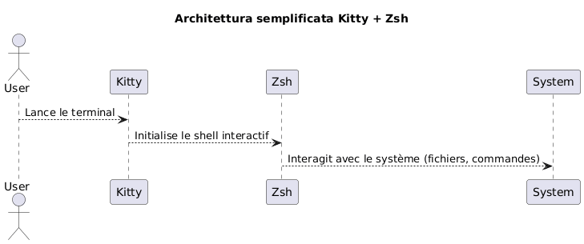
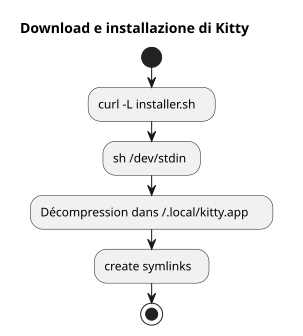
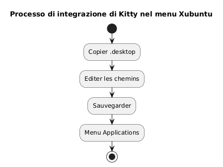
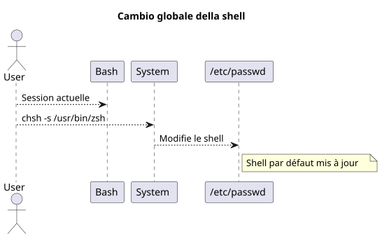
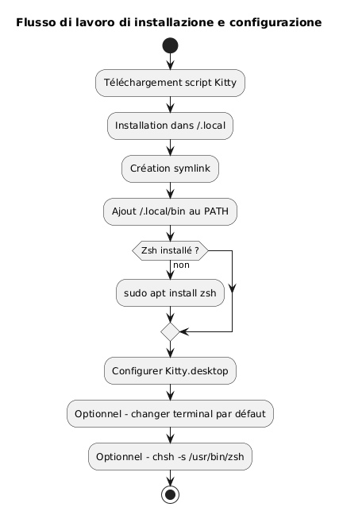
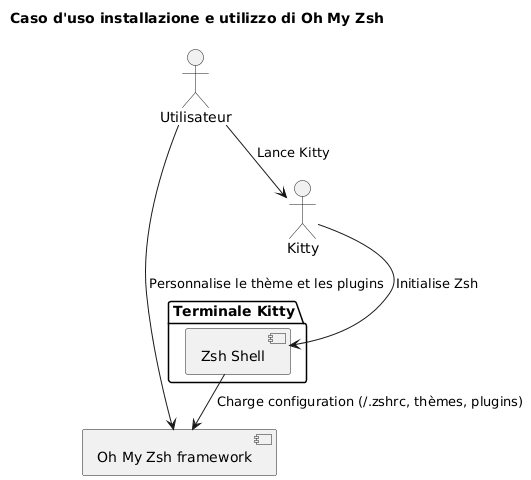
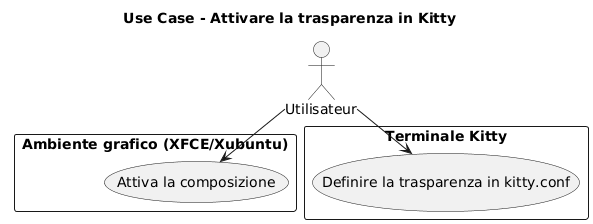
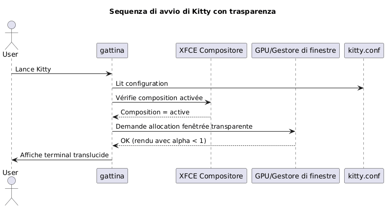

Installare il terminale Kitty e configurare Zsh come shell predefinito sotto Xubuntu
Publié le 07 May 2026 Mis à jour le 2026-05-07
- Perché scegliere Kitty e Zsh?
- Prerequisiti di sistema
- Download e installazione di Kitty
- Integrazione di Kitty in Xubuntu
- Installazione di Zsh
- Imposta Zsh come shell predefinito
- Configurazione di Zsh (opzionale)
- Riassunto del flusso di lavoro completo
- Verifica finale
- Installazione e configurazione di Oh My Zsh
- Attivare la traslucenza in Kitty
- Disattiva il segnale acustico (segnale acustico)
- Aggiornamento di Kitty
- Riferimenti
- Conclusione
Questa guida spiega passo dopo passo come installare il terminale kitty su Xubuntu, configurarlo correttamente e sostituire bash con zsh come shell predefinita. Il progetto kitty è disponibile qui : https://github.com/kovidgoyal/kitty.
_ Kitty è un terminale moderno, veloce e configurabile, particolarmente adatto agli sviluppatori esigenti. _
Perché scegliere Kitty e Zsh?
Kitty si distingue per:
-
Performance superiori grazie all’accelerazione GPU,
-
Una configurazione interamente basata su un unico file di testo,
-
Un eccellente supporto dei caratteri e delle legature
Zsh, invece, è un potente shell interattivo che offre:
-
Un completamento intelligente,
-
Un prompt personalizzabile,
-
Una grande compatibilità con bash.
Associando Kitty e Zsh, si beneficia di un ambiente produttivo ed estetico.

|
Questa guida è volontariamente limitata all’installazione tramite script e a Xubuntu. |
Prerequisiti di sistema
Prima di iniziare, assicurati di avere:
-
Xubuntu installato,
-
un accesso a internet,
-
un shell bash funzionante per avviare lo script.
Controlla il tuo ambiente:
uname -a
lsb_release -aDownload e installazione di Kitty
Kitty raccomanda di installarlo tramite uno script ufficiale che posiziona i file in`~/.local/kitty.app`.
|
Questo metodo è indipendente dai gestori di pacchetti (pas de`apt`). |
Scarica lo script di installazione
Esegui il seguente comando
curl -L https://sw.kovidgoyal.net/kitty/installer.sh | sh /dev/stdinQuesto comando esegue :
-
download dei binari,
-
estrazione in`~/.local/kitty.app`,
-
creazione dei collegamenti simbolici.

Creazione dei link simbolici
Al fine di poter invocare`kitty`dal terminal, crea un collegamento simbolico:
ln -s ~/.local/kitty.app/bin/kitty ~/.local/bin/kittyAggiungete`~/.local/bin`aggiungilo al tuo PATH se non l’hai ancora fatto :
echo 'export PATH="$HOME/.local/bin:$PATH"' >> ~/.zshrc
source ~/.zshrcPuoi verificare l’installazione :
kitty --versionIntegrazione di Kitty in Xubuntu
Affinchè Kitty appaia nel menu delle applicazioni:
Copiare il file desktop
Copia il file`.desktop`fornito :
cp ~/.local/kitty.app/share/applications/kitty.desktop ~/.local/share/applications/Modifica il file desktop
Modifica il file :
nano ~/.local/share/applications/kitty.desktopVerifica o modifica le seguenti righe:
[Desktop Entry]
Version=1.0
Type=Application
Name=Kitty Terminal
Comment=Fast GPU-based terminal emulator
Exec=/home/$USER/.local/kitty.app/bin/kitty
Icon=kitty
Categories=System;TerminalEmulator;Sostituisca`YOURUSER`con il tuo nome utente.

Associare Kitty come terminale predefinito (facoltativo)
Perché Kitty sia il terminale predefinito :
sudo update-alternatives --install /usr/bin/x-terminal-emulator x-terminal-emulator ~/.local/kitty.app/bin/kitty 50
sudo update-alternatives --config x-terminal-emulatorSelezionate`kitty`nel menu proposto.
Installazione di Zsh
Se Zsh non è ancora installato, esegui :
sudo apt install zshVerifica l’installazione:
zsh --versionImposta Zsh come shell predefinito
Puoi cambiare il tuo shell globalmente o solo in Kitty.
Metodo globale (per tutti i terminali)
Identifica il percorso assoluto :
which zshIn generale`/usr/bin/zsh`.
Modifica la shell predefinita:
chsh -s /usr/bin/zshDisconnettiti e riconnettiti.

Metodo specifico per Kitty
Se preferisci cambiare solo la shell in Kitty, modifica il file di configurazione :
nano ~/.config/kitty/kitty.confAggiungi questa riga :
shell zshSalva e riavvia Kitty.
Configurazione di Zsh (opzionale)
Per personalizzare il tuo Zsh :
Creare un file .zshrc
touch ~/.zshrc
nano ~/.zshrcEsempio di configurazione minima
export ZSH_THEME="robbyrussell"
export PATH="$HOME/.local/bin:$PATH"
alias ll="ls -la"Riassunto del flusso di lavoro completo
Lo schema sottostante riepiloga l’intero processo :

Verifica finale
Avvia Kitty :
kittyLei dovrebbe vedere che`zsh`è attivo :
echo $SHELLRisultato atteso:
/usr/bin/zsh
Per modificare la dimensione del carattere ingattina, bisogna regolare il parametro`font_size`nel file di configurazione. Ecco la procedura dettagliata:
Aprire il file di configurazione
Il file principale di configurazione si trova solitamente in :
~/.config/kitty/kitty.confSe questo file non esiste ancora, puoi crearlo. Esempio:
nano ~/.config/kitty/kitty.conf🖋️ Aggiungi o modifica `font_size
Aggiungi la seguente direttiva, o modificala se esiste già:
font_size 14.0qui`14.0`corrisponde alla dimensione desiderata. Puoi inserire qualsiasi valore decimale, ad esempio`12.0`, 15.5, ecc.
💾 Salva e riavvia Kitty
-
Salva (
Ctrl + O, poi`Entrée`) e lascia (Ctrl + X) se utilizzate`nano`. -
Chiudi tutte le finestre di Kitty, poi riavvia il terminale affinché il cambiamento abbia effetto.
�✅ Regolazione dinamica (Zoom temporaneo)
Se vuoi eseguire temporaneamente uno zoom avanti/indietro senza modificare la configurazione, utilizza le scorciatoie da tastiera predefinite:
-
Aumentare la dimensione del carattere :
Ctrl + Shift + =
-
Ridurre la dimensione del carattere:
Ctrl + Shift + -
-
Reimposta la dimensione:
Ctrl + Shift + Backspace
Queste impostazioni non persistono dopo la chiusura del terminale.
Installazione e configurazione di Oh My Zsh
Una volta installato e configurato Zsh come shell predefinito, puoi arricchire il tuo ambiente con Oh My Zsh, un framework di gestione della configurazione di Zsh, offrendo:
-
una collezione di temi per il prompt,
-
numerosi plugin,
-
un’organizzazione chiara della configurazione.
Installazione di Oh My Zsh
Assicurati che Zsh sia attivo :
zsh --versionSe necessario, avvia:
zshPoi scarica ed esegui lo script di installazione ufficiale:
sh -c "$(curl -fsSL https://raw.githubusercontent.com/ohmyzsh/ohmyzsh/master/tools/install.sh)"Questo script :
-
crea la cartella`~/.oh-my-zsh`,
-
Salva eventualmente il tuo file`~/.zshrc`,
-
attiva automaticamente il nuovo prompt.
Cambiare il tema
Apri il tuo file di configurazione :
nano ~/.zshrcModifica la variabile`ZSH_THEME`per scegliere un altro tema (ad esempio`agnoster`) :
ZSH_THEME="agnoster
Salvare poi ricaricare la configurazione:
source ~/.zshrcVerifica
Avvia Kitty e verifica che il prompt sia cambiato correttamente. Puoi confermare che Oh My Zsh è attivo eseguendo:
echo $ZSHIl risultato dovrebbe essere simile a:
/home/tuo_utente/.oh-my-zsh
Diagramma dei casi d’uso

Attivare la traslucenza in Kitty
Una delle funzionalità più apprezzate di Kitty è la possibilità di aggiungere trasparenza allo sfondo del terminale. Ciò permette di vedere leggermente l’ambiente sottostante (finestra, desktop, ecc.), il che è particolarmente utile nel multitasking.
Prerequisito per la trasparenza
La trasparenza in Kitty si basa sulcompositore di finestreutilizzato dall’ambiente grafico. In Xubuntu (basato su XFCE), assicurati che lacomposizione è attivata.
-
clic destro sul desktop > Impostazioni >Impostazioni del gestore delle finestre,
-
schedaCompositore: la casella "Attivare la composizione" deve essere selezionata.

Configurazione della trasparenza in kitty.conf
Apra il suo file di configurazione`~/.config/kitty/kitty.conf` :
nano ~/.config/kitty/kitty.confAggiungete o modificate le seguenti righe:
background_opacity 0.85Questo parametro accetta valori compresi tra :
-
1.0→ opaco (nessuna trasparenza), -
0.0→ completamente trasparente (inutilizzabile) -
valori intermedi come`0.90`,
0.75, ecc.
Un buon compromesso visivo è generalmente tra`0.85` et 0.95.
Riavvia Kitty
Chiudi tutte le istanze di Kitty, quindi riapri una nuova finestra affinché le modifiche abbiano effetto:
kittyIntegratori possibili
Se utilizzi uno sfondo del terminale personalizzato, puoi anche impostare un colore di sfondo con trasparenza (in RGBA):
background #1e1e2effL’ultima componente (ff) indica l’opacità (di`00` à ff).
Diagramma di sequenza - Inizializzazione di Kitty con trasparenza

Limitazioni note
|
La traslucenza non funziona se : - il compositore XFCE è disattivato, - un gestore di finestre incompatibile è utilizzato, - utilizzi Kitty in modalità tmux in background senza supporto per la trasparenza. |
Disattiva il segnale acustico (segnale acustico)
Per impostazione predefinita, Kitty emette un suono di bip quando viene inserito un comando errato o quando un evento del terminal lo attiva. Questo rumore può diventare rapidamente fastidioso, soprattutto in un ambiente di sviluppo intensivo.
Per disattivare questo comportamento, aggiunga la seguente direttiva al file`~/.config/kitty/kitty.conf`:
audible_bell no|
Puoi anche attivare un feedback visivo al posto del segnale acustico: |
Aggiornamento di Kitty
Poiché Kitty è installato tramite uno script e non un gestore di pacchetti, l’aggiornamento si effettua rilanciando lo script di installazione ufficiale. Questo permette di scaricare l’ultima versione e di aggiornare la tua installazione esistente in`~/.local/kitty.app`.
|
Il suffisso`.app`nel cammino`~/.local/kitty.app`è la convenzione di installazione di Kitty su Linux tramite il suo script ufficiale, e non indica in alcun modo una compatibilità esclusiva con macOS. |
|
Prima di eseguire il comando di aggiornamento, assicurati di essere nella tua directory personale ( |
Esegua il comando seguente dalla sua directory personale:
curl -L https://sw.kovidgoyal.net/kitty/installer.sh | sh /dev/stdinQuesto script si occuperà di:
-
Scarica i binari della nuova versione.
-
Estrarre i file in`~/.local/kitty.app`.
-
Aggiornare i link simbolici se necessario.
Dopo l’aggiornamento, si consiglia di chiudere tutte le istanze di Kitty e di riavviarle affinché la nuova versione venga correttamente riconosciuta.
Riferimenti
Se desideri approfondire la personalizzazione, consulta la documentazione ufficiale:
Conclusione
Ora hai:
-
di un terminale moderno e performante (Kitty)
-
di un shell potente e personalizzabile (Zsh)
-
di una configurazione pulita e indipendente dai pacchetti di sistema
-
di un terminale estetico e funzionale equipaggiato di Oh My Zsh
Articoli correlati
14 May 2026